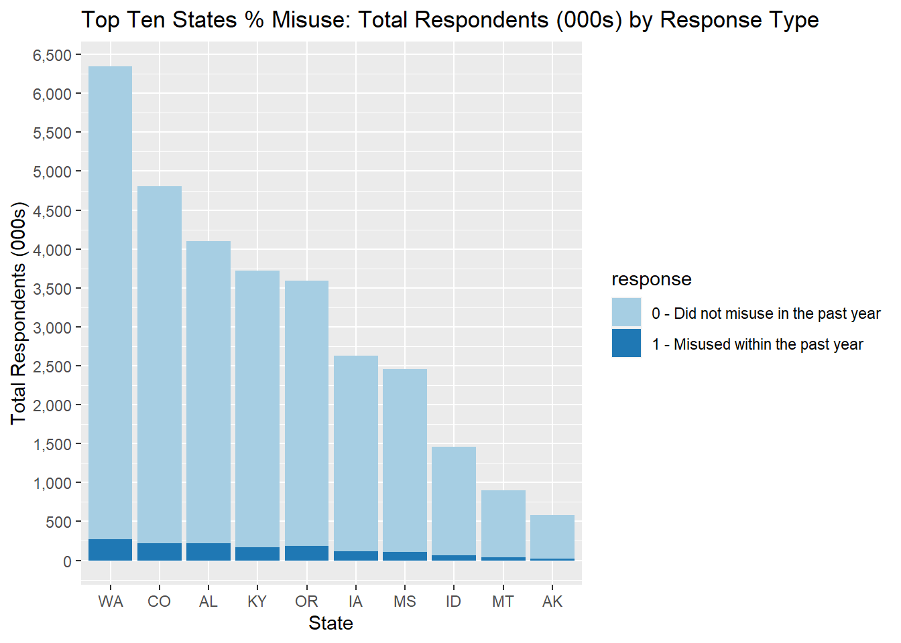
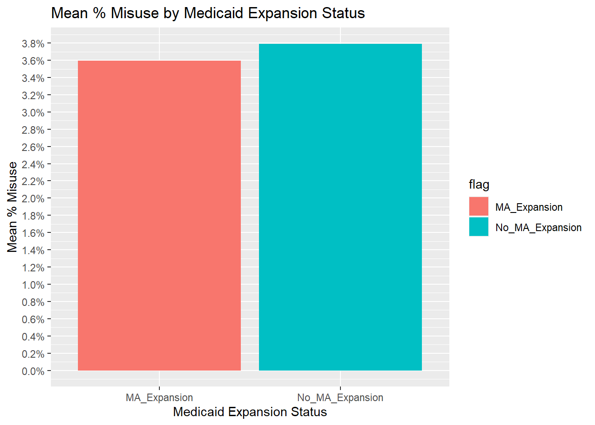
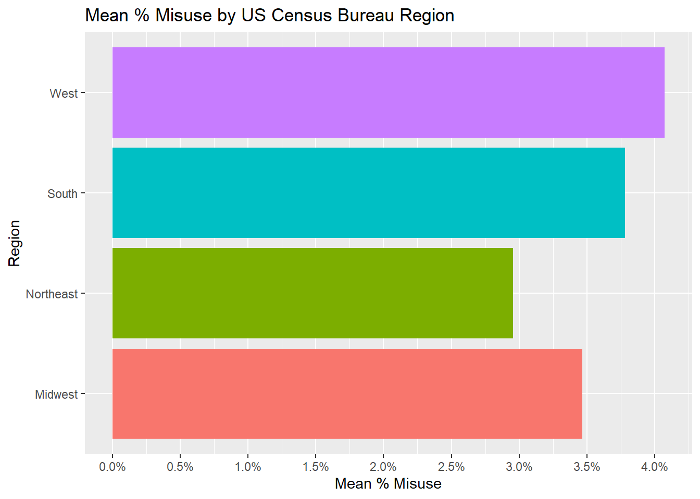

In this project, Naomi Buell presented us with a dataset of pain medication misuse survey results for tidying and analysis. The data was sourced from the 2018-19 National Survey on Drug Use and Health (NSDUH) by the Substance and Mental Health Services Administration (SAMHSA): SAMHSA 2018-19 NSDUH).
While the data as displayed at the above link was untidy, the downloaded .csv was in fact tidy. I used Excel to “untidy” it and replicate the format displayed on the site for the purposes of this exercise.
Naomi asked us to use this and other data to answer the following questions about pain medication misuse:
Compare and rank prevalence by state
Compare survey results by whether states have expanded Medicaid
Check for regional patterns
I began by loading the libraries:
# -------- Load libraries library(tidyverse)
── Attaching core tidyverse packages ──────────────────────── tidyverse 2.0.0 ──
✔ dplyr 1.1.4 ✔ readr 2.1.5
✔ forcats 1.0.0 ✔ stringr 1.5.1
✔ ggplot2 3.4.4 ✔ tibble 3.2.1
✔ lubridate 1.9.3 ✔ tidyr 1.3.0
✔ purrr 1.0.2
── Conflicts ────────────────────────────────────────── tidyverse_conflicts() ──
✖ dplyr::filter() masks stats::filter()
✖ dplyr::lag() masks stats::lag()
ℹ Use the conflicted package (<http://conflicted.r-lib.org/>) to force all conflicts to become errors
library(ggplot2)library(scales)
Attaching package: 'scales'
The following object is masked from 'package:purrr':
discard
The following object is masked from 'package:readr':
col_factor
library(RColorBrewer)
I then loaded the untidied .csv file and began cleaning it by filling in missing values in the first column:
# -------- Load untidy .csv and rename/fill first columndf <-read_csv("https://raw.githubusercontent.com/AmandaSFox/DATA607/main/project_2/Dataset_2_Pain/Untidied2.csv") %>%rename("response"="RC-PAIN RELIEVERS - PAST YEAR MISUSE") %>%fill ("response")
Rows: 12 Columns: 55
── Column specification ────────────────────────────────────────────────────────
Delimiter: ","
chr (2): RC-PAIN RELIEVERS - PAST YEAR MISUSE, Values
dbl (53): AK, AL, AR, AZ, CA, CO, CT, DC, DE, FL, GA, HI, IA, ID, IL, IN, KS...
ℹ Use `spec()` to retrieve the full column specification for this data.
ℹ Specify the column types or set `show_col_types = FALSE` to quiet this message.
I validated the data and continued cleaning by filtering for only the necessary rows, and then tidied by melting the state variables used as column headers:
# -------- One observation = one state/response type pair. Used for stacked bar chart below.df_tidy <-filter(df, Values =="Weighted Count") %>%pivot_longer(cols =c(3:55),names_to ="state",values_to ="count" ) %>%filter(!(state %in%c("Grand Total","Overall")))
Note that in the above, one observation = one pair of state + response type. This tidy format will be used later for stacked bar charts grouped by those two variables.
I also created a second, wider tidy dataframe where one observation = one state. This second tidy format was appropriate to rank states.
# -------- Wide tidy option: Pivot out response types into columns. # -------- One observation (state) per row, used to rank states. df_tidy_wide <-pivot_wider(df_tidy, names_from = response, values_from = count) %>%mutate(`% Misused`=`1 - Misused within the past year`/Overall)
1. Compare and rank states
With the data tidied, I began analysis #1: Compare and rank prevalence by state.
First, I displayed the top ten states by % misuse (below) using the “wide” tidy dataframe by state. See list below: Alabama was in the top spot, with a rate of 5.34%, followed by Oregon (5.07%), Colorado (4.58%), etc., with Alaska at #10 with 4.27%.
As these states are very different in population size, % does not tell the whole story. I created a stacked bar chart of the same top ten states using the “long” tidy dataframe by state/response type. The stacked bar format highlights the relative size of the top ten states.
# -------- Display top ten states by % Misusetopten <-head(arrange(df_tidy_wide,desc(`% Misused`)),n =10)select(topten,`state`,Overall,`% Misused`)
# A tibble: 10 × 3
state Overall `% Misused`
<chr> <dbl> <dbl>
1 AL 4101000 0.0534
2 OR 3591000 0.0507
3 CO 4806000 0.0458
4 KY 3719000 0.0457
5 MT 898000 0.0445
6 MS 2453000 0.0440
7 ID 1458000 0.0439
8 IA 2632000 0.0437
9 WA 6350000 0.0430
10 AK 585000 0.0427
# -------- Stacked bar chart of top ten states by % misuse, sorted by their relative sizetopten_tidy <-semi_join(df_tidy, topten, join_by(`state`)) %>%filter(!response =="Overall")ggplot(topten_tidy,aes(x =reorder(`state`,-`count`), y =`count`/1000, fill = response)) +geom_bar(stat ="identity") +scale_fill_brewer(palette ="Paired") +scale_y_continuous(n.breaks=20, labels = scales::label_comma()) +xlab("State") +ylab("Total Respondents (000s)") +ggtitle("Top Ten States % Misuse: Total Respondents (000s) by Response Type")

2. Medicaid Expansion
For the next part of the analysis, I flagged the ten states that did not expand Medicaid (MA) based on the site Naomi suggested: https://www.kff.org/affordable-care-act/issue-brief/status-of-state-medicaid-expansion-decisions-interactive-map/
#-------- Read in and display list of non-expansion states df_no_MA <-read_csv("https://raw.githubusercontent.com/AmandaSFox/DATA607/main/project_2/Dataset_2_Pain/MA_No_Exp.csv", show_col_types =FALSE)df_no_MA[,1]
# A tibble: 10 × 1
state
<chr>
1 WY
2 WI
3 KS
4 TX
5 TN
6 MS
7 AL
8 GA
9 SC
10 FL
The below analysis shows that the ten states above without Medicaid expansion did have a slightly higher mean % misuse in this survey than states with MA expansion (3.79% vs. 3.60%):
#-------- Flag non-MA expansion states in wide tidy datasetdf_no_MA <-read_csv("https://raw.githubusercontent.com/AmandaSFox/DATA607/main/project_2/Dataset_2_Pain/MA_No_Exp.csv")
Rows: 10 Columns: 2
── Column specification ────────────────────────────────────────────────────────
Delimiter: ","
chr (2): state, flag
ℹ Use `spec()` to retrieve the full column specification for this data.
ℹ Specify the column types or set `show_col_types = FALSE` to quiet this message.
df_tidy_wide <-left_join(df_tidy_wide,df_no_MA)
Joining with `by = join_by(state)`
# -------- Create summary of mean % Misuse by MA/Nondf_MA_vs_Non <- df_tidy_wide %>%group_by(`flag`) %>%summarize(mean(`1 - Misused within the past year`/`Overall`)) %>%rename("mean % misuse"="mean(`1 - Misused within the past year`/Overall)")df_MA_vs_Non <- df_MA_vs_Non %>%replace_na(list(flag ="MA_Expansion"))df_MA_vs_Non
# A tibble: 2 × 2
flag `mean % misuse`
<chr> <dbl>
1 No_MA_Expansion 0.0379
2 MA_Expansion 0.0360
# -------- Create visualization of mean % Misuse by MA/Nonggplot(df_MA_vs_Non, aes(x = flag,y =`mean % misuse`, fill = flag)) +geom_bar(stat ="identity") +scale_y_continuous(n.breaks=20, labels = scales::label_percent()) +xlab("Medicaid Expansion Status") +ylab("Mean % Misuse") +ggtitle("Mean % Misuse by Medicaid Expansion Status")

3. Check for regional patterns
Finally, I used a census.gov file to map states to regions and divisions, forking a .csv copy from Github (cphalpert/census-regions). Note that the original source cited (http://www.census.gov/geo/maps-data/maps/pdfs/reference/us_regdiv.pdf) is no longer a valid link; however, the mapping itself is still valid.
I followed the same process of bringing in the lookup table, joining it to the wide tidy dataframe by state, and summarizing the mean % misuse by region and division (sub-region).
The results show differences between regions and divisions: the West in aggregate had a misuse rate of 4.07%, followed by the South at 3.78%. The Northeast had the lowest % misuse reported at 2.95%. By division, the South and West occupied the top four out of nine spots (East South Central, Pacific, Mountain, and West South Central). The two Northeast divisions were ranked at the bottom, #8 & #9 with rates of 3.02% and 2.83% respectively.
# -------- Flag states by region and compare rates of misusedf_region <-read_csv("https://raw.githubusercontent.com/AmandaSFox/census-regions/master/us%20census%20bureau%20regions%20and%20divisions.csv")
Rows: 51 Columns: 4
── Column specification ────────────────────────────────────────────────────────
Delimiter: ","
chr (4): State, State Code, Region, Division
ℹ Use `spec()` to retrieve the full column specification for this data.
ℹ Specify the column types or set `show_col_types = FALSE` to quiet this message.
df_tidy_wide <-left_join(df_tidy_wide, df_region, join_by(x$`state`== y$`State Code`))# -------- regiondf_by_region <- df_tidy_wide %>%group_by(`Region`) %>%summarize(mean(`1 - Misused within the past year`/`Overall`)) %>%rename("mean % misuse"="mean(`1 - Misused within the past year`/Overall)") %>%arrange(-`mean % misuse`)df_by_region
# A tibble: 4 × 2
Region `mean % misuse`
<chr> <dbl>
1 West 0.0407
2 South 0.0378
3 Midwest 0.0346
4 Northeast 0.0295
ggplot(df_by_region, aes(x = Region,y =`mean % misuse`, fill = Region)) +geom_bar(stat ="identity") +scale_y_continuous(n.breaks=12, labels = scales::label_percent()) +coord_flip() +theme(legend.position ="") +ylab("Mean % Misuse") +ggtitle("Mean % Misuse by US Census Bureau Region")

# -------- divisiondf_by_division <- df_tidy_wide %>%group_by(`Region`,`Division`) %>%summarize(mean(`1 - Misused within the past year`/`Overall`)) %>%rename("mean % misuse"="mean(`1 - Misused within the past year`/Overall)") %>%arrange(-`mean % misuse`)
`summarise()` has grouped output by 'Region'. You can override using the
`.groups` argument.
df_by_division
# A tibble: 9 × 3
# Groups: Region [4]
Region Division `mean % misuse`
<chr> <chr> <dbl>
1 South East South Central 0.0440
2 West Pacific 0.0432
3 West Mountain 0.0392
4 South West South Central 0.0381
5 Midwest East North Central 0.0360
6 South South Atlantic 0.0349
7 Midwest West North Central 0.0337
8 Northeast New England 0.0302
9 Northeast Middle Atlantic 0.0283
ggplot(df_by_division, aes(x =`Division`,y =`mean % misuse`, fill = Division)) +geom_bar(stat ="identity") +scale_y_continuous(n.breaks=12, labels = scales::label_percent()) +coord_flip() +theme(legend.position ="") +ylab("Mean % Misuse") +ggtitle("Mean % Misuse by US Census Bureau Division")